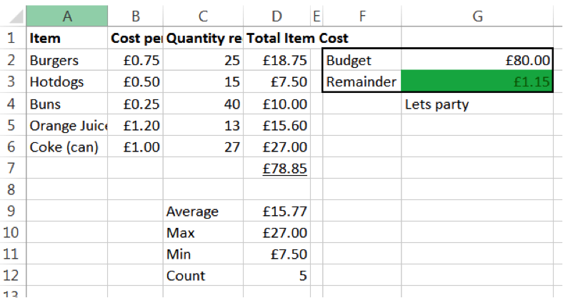
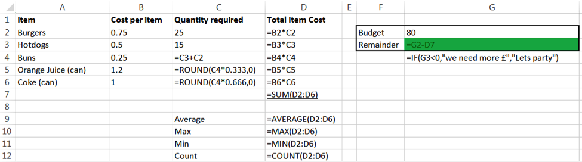

The Game of Life
Table of Contents
1 The basics - BBQ
- You may or may not have used a spreadsheet before.
- In any event, it's probably worth recapping the basic vocabulary used in a spreadsheet, which will help you in the coming lessons.
- The tutorial below walks you through the vocabulary of spreadsheets, writing simple formulae, using AutoSum and using formula replication to save time.
- Try the different techniques for yourself as you watch the tutorial. When you're done, see if you can write out all the odd numbers from 5 to 51, then add them all up.
2 The BBQ
- To remind ourselves of the basic features of Excel we are going to finish a partly completed model of a budget for a BBQ.
Download It
- Download this workbook to your H: drive.
- Open the spreadsheet in Excel.
Learn It
- Let's pretend you want to host a large BBQ, which you and your friends will all contribute to the cost of.
- A friend has started to produce a spreadsheet to hold all the information you'll need to work out if you have enough money.
- The spreadsheet has some issues and is incomplete.
- When complete it will be able to dynamically calculate whether you have gone under or over budget in regards to holding your BBQ.
- Here is an example of 40 people attending the BBQ, which is what we're working towards:

Try It
- We'll need to write some formulae to perform our calculations.
- The formulae you need are all on show in the screenshot below:

- Apart from the basic maths calculations you will need to know:
- Conditional formatting (cell G3)
- Excel if statement (cell G4)
Badge It
- Silver: You have been asked to plan a BBQ for 60 people, using the following figures:
- Burgers: 48
- Hot-dogs: 12
- Drinks: 1/5 of the guests want Orange, 4/5 want Coke.
- You need to know if £120.00 is sufficient to pay for the cost of your BBQ.
- Complete the formulae above and tidy the spreadsheet, then change the variables (e.g. number of burgers) to those above.
- Upload a screen shot of your completed spreadsheet to collect the badge.
3 The basics - Olympic data
- Excel is very good tool to use when looking at a large data set and trying to extract some information.
- We will try and analyse some Olympic medal data to answer some questions.
Download It
- Download this workbook to your H: drive.
- Open the spreadsheet in Excel
Learn It
Badge It
- Gold: Answer the following questions in the Medal Analysis tab of the workbook
- What is the total of all medals awarded?
- Who has won the most gold medals in a single sport, in a single year?
- How may athletes names are missing?
- Replace the missing names with Unknown.
- Sort the data by athlete, who appears last on the list?
- Sort the data A-Z by country then A-Z by athlete, who is last on the list?
- Create a new tab called Brazil, copy and paste all the Brazil data to this new tab.
- How old was the youngest medal winner from any country?
- How many medals where awarded for Ice Hockey in total?
- What was the average age of all the athletes?
- How many Olympics did Natalie Ward win 1 or more metals in?
4 The basics - Science, maths and graphs
- In this lesson you will learn how to visually represent data.
Download It
- Download this workbook to your H: drive.
- Open the spreadsheet in Excel
Learn It
- All graphs MUST:
- Have a title
- Have axis labels
- Be pleasing to the eye
- Make the data easier to undstand compared to looking at the data itself
- Use a type of graph that is correct for the data set
- Basic graphs
- Graph features
Badge It
- Platinum The workbook has several worksheets you will need to add a graph to each.
- Population - Plot a bar chart of population vs country
- Temperature - Plot a line graph of date vs minimum temperature
- Linear1 – Plot a graph representing the equation y = x + 2
- Linear2 - Plot a graph representing the equation y = 2x + 4
- Quadratic - Plot a graph representing the equation y = -2(x*x)
- Heating Curve – use the image to populated the data and plot a line graph
- Raw Temp – use "text to columns" to clean up the data and plot a of year and month vs hours of sunshine